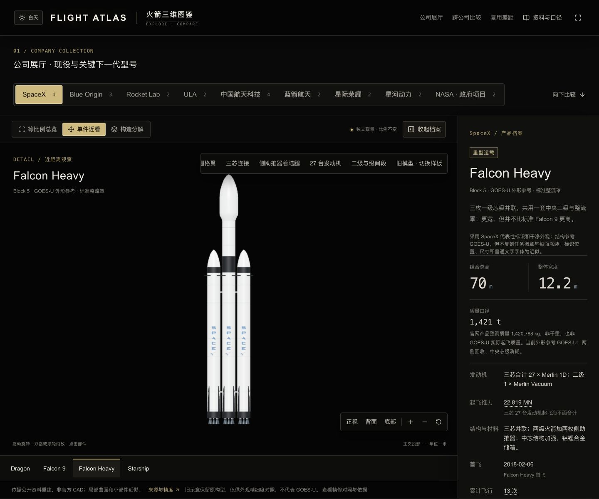
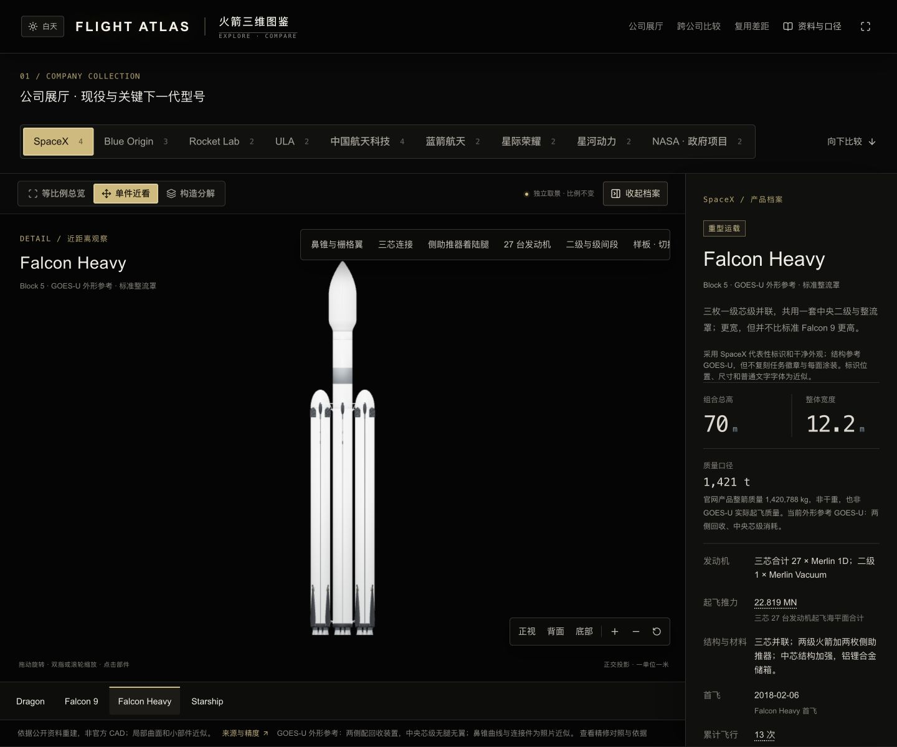
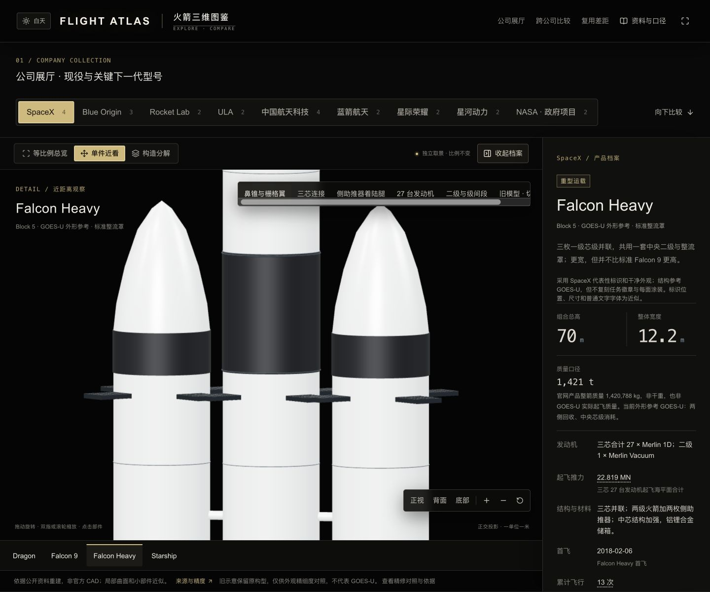
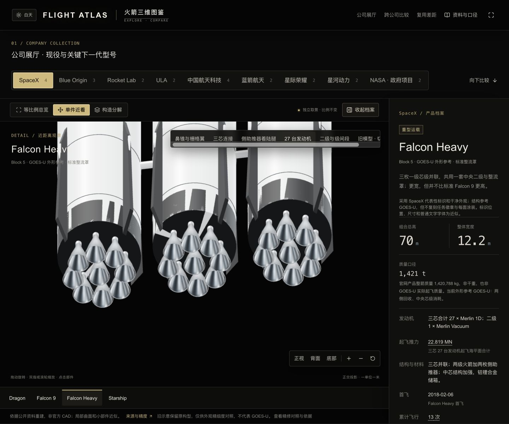
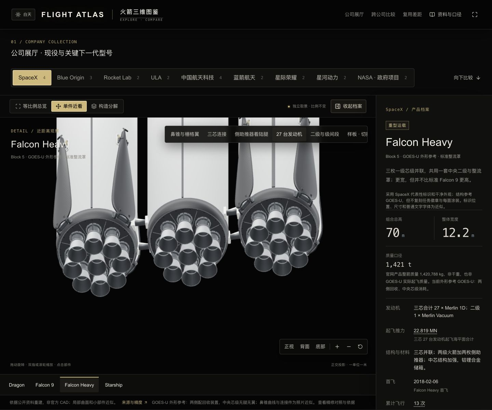
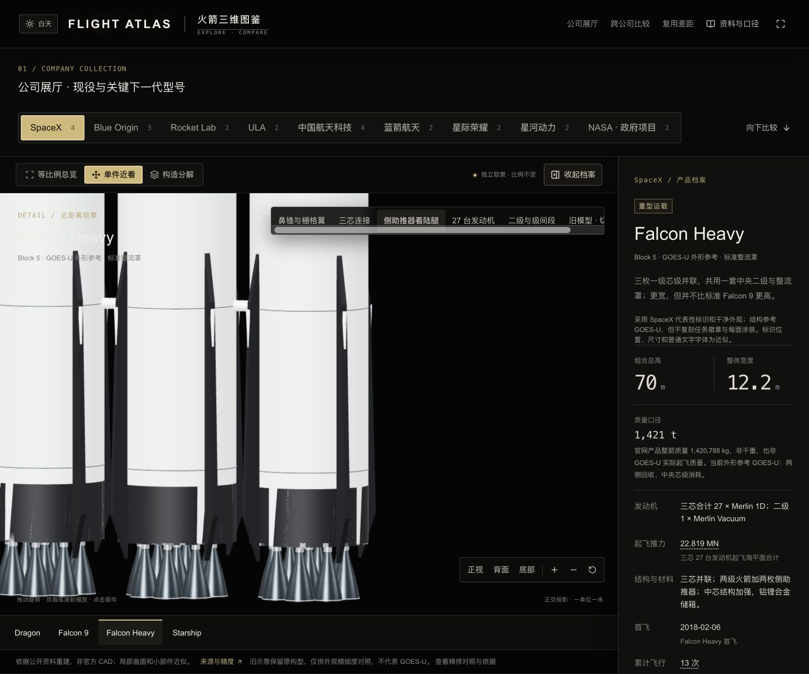
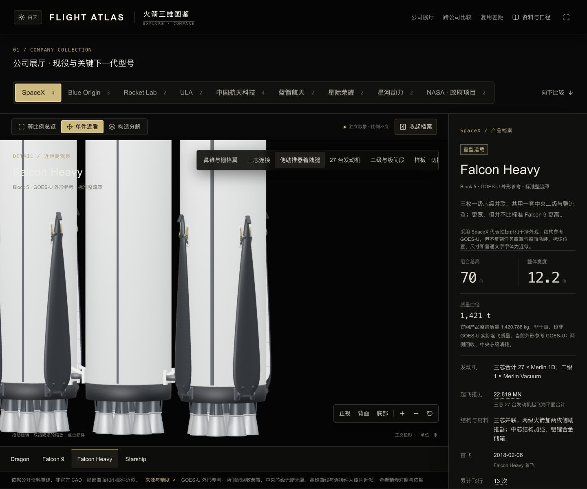
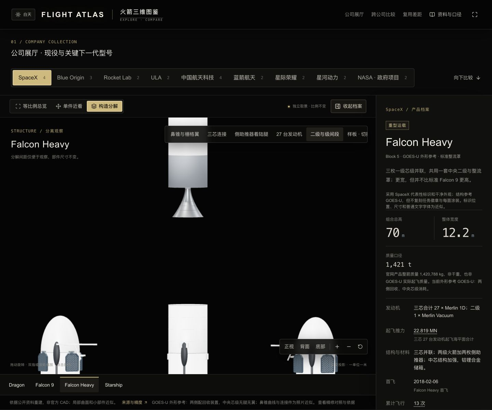
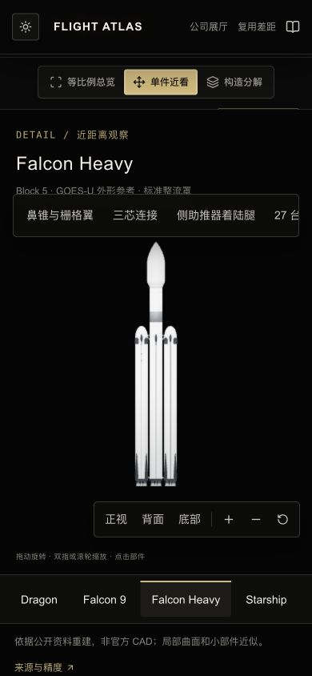

FLIGHT ATLAS / MODEL DETAILS
Falcon Heavy，三芯各有分工。
按 GOES-U（2024 年 6 月 25 日）的 Block 5 实拍精修：两侧带回收装置，中央芯级消耗。保留统一米制尺度、手动旋转和无网格地面。
涂装方位已复核更新：两侧大号 SpaceX 字样分别朝外侧，最新画面及依据见本轮核查页。下方图片保留初次精修的历史对照，字样方位以最新核查页为准。
70 m整高 · 单芯直径 3.66 m
27＋1海平面 Merlin ＋ 真空 Merlin
两侧回收合计 8 条腿、8 片栅格翼
整箭 · 同视角与光照
{kind=link}

{kind=link}

侧鼻锥、栅格翼与上连接
{kind=link}

{kind=link}
发动机尾部
{kind=link}

{kind=link}

侧助推器着陆腿
{kind=link}

{kind=link}

分解与浅色皮肤
{kind=link}

{kind=link}
资料与仍存在的近似
参数取自 SpaceX 产品页和 2025 Falcon 用户手册。NOAA 的任务说明明确 GOES-U 中央芯级消耗，NASA 当天报道确认两侧着陆。
实际核对了 NASA/SpaceX 的 上部高清近景、腿部与中央芯级、整箭正面、水平转运和 离塔飞行照。参考摄影不打入源文件下载包。
- 鼻锥曲线、各段长度、芯间距、连接件钟向、翼格与腿部细节为照片近似。不是 SpaceX 官方 CAD。
- 未取得 GOES-U 27 喷管无遮挡底视；尾部按三组共通 Merlin 建模，下连接件只保留简化外部轮廓。不虚构内部释放机构或完整管路。
- 结构参考 GOES-U，涂装为干净代表性外观；未复刻任务徽章、全部维修痕迹和每面字标。官方产品质量不是该次发射实测质量。
- 网页截图来自真实 Three.js 场景，不是离线渲染。手机尺寸视窗检查不等于实体手机 GPU 或蜂窝网络性能测试。
点击模型旁的近景按钮查看细节；拖动旋转、双指缩放，构造分解后可重新装配。Falcon 9、Starship 的已验收模型与交互保留。
手机取景与网页开销
{kind=link}

GLB 10,625,116 字节（10.63 MB），553,038 个三角面、68 个网页网格实例，两张 256×256 表面贴图。可编辑源压缩包约 6.5 MiB。
本机网页观察到加载与解析约 0.2–0.5 秒；这是本机开发环境的单次观察，不代表手机蜂窝下载时间或帧率保证。没有选中 Falcon Heavy 的跨公司场景不预载这一资产。
已检查深浅两种主题、部件点击、分解复原、27 个一级喷管、两侧各 4 腿 4 翼、同尺总览与跨公司勾选。Falcon 9 和 Starship 模型文件逐字节保持不变；没有自动旋转或地面网格。